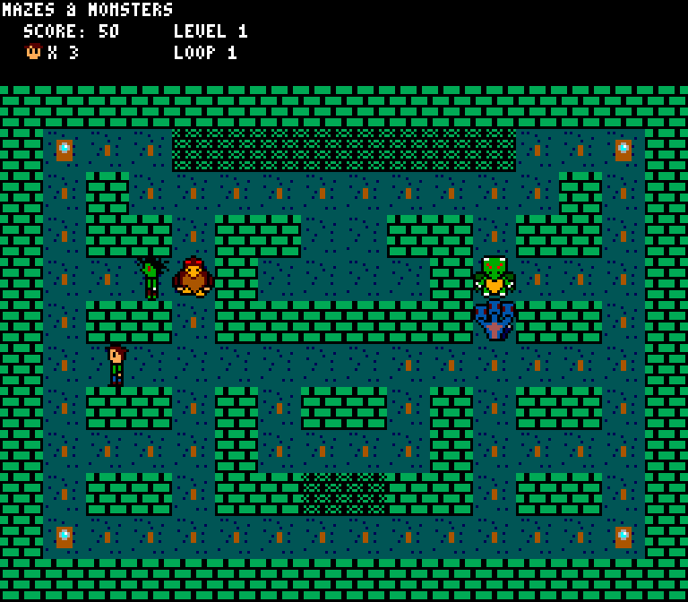

Mazes and Monsters was my second big attempt at designing and developing a game, back when I was 17, in 2014. I created the game in my free time, and solo; all assets and programming were done by me. I imposed some guidelines and goals for myself; I restricted myself to the color palette, resolution, sprite size, and sounds prouducable by the Sega Master System, and it wasn't just going to be a blatant Pac-Man clone; there needed to be some originality to it. That came in the form of somewhat original AI, breakable walls, a new theme, and needing to actually climb the stairs to complete the stage.
The game is mostly finished, however I ended up moving on to bigger and better things before I implemented difficulty increases and other features.
The game was programmed using the Allegro graphics library with C++. Artwork was made in GIMP. The music and SFX was made using the Deflemask tracker.
